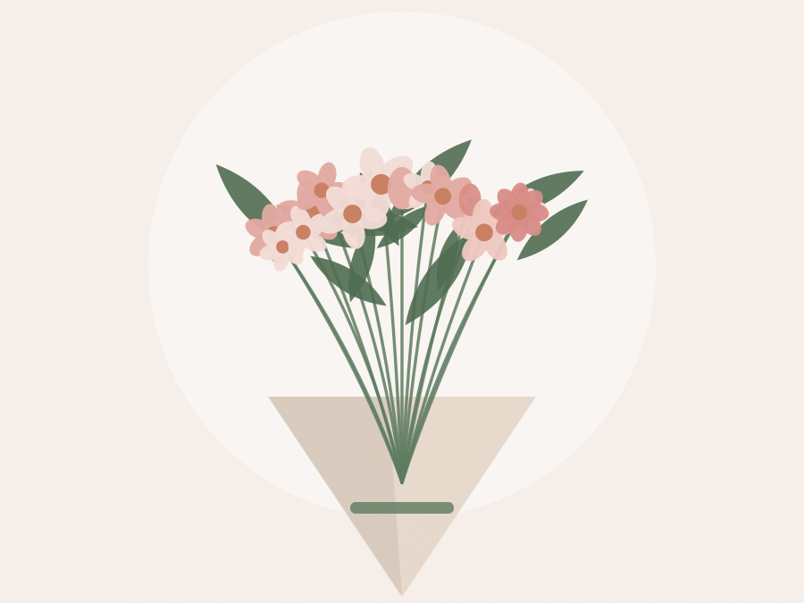

Illustration
Tons poudrés
Tendresse
Roses, renoncules et gypsophile dans une gamme rose pâle. Le bouquet qui ne se trompe jamais de destinataire : il convient à une déclaration comme à un merci.
- Anniversaire
- Amour
- Naissance
dès 45 €exempleVoir la fiche